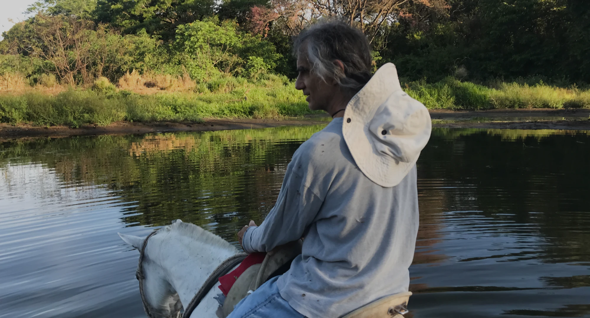
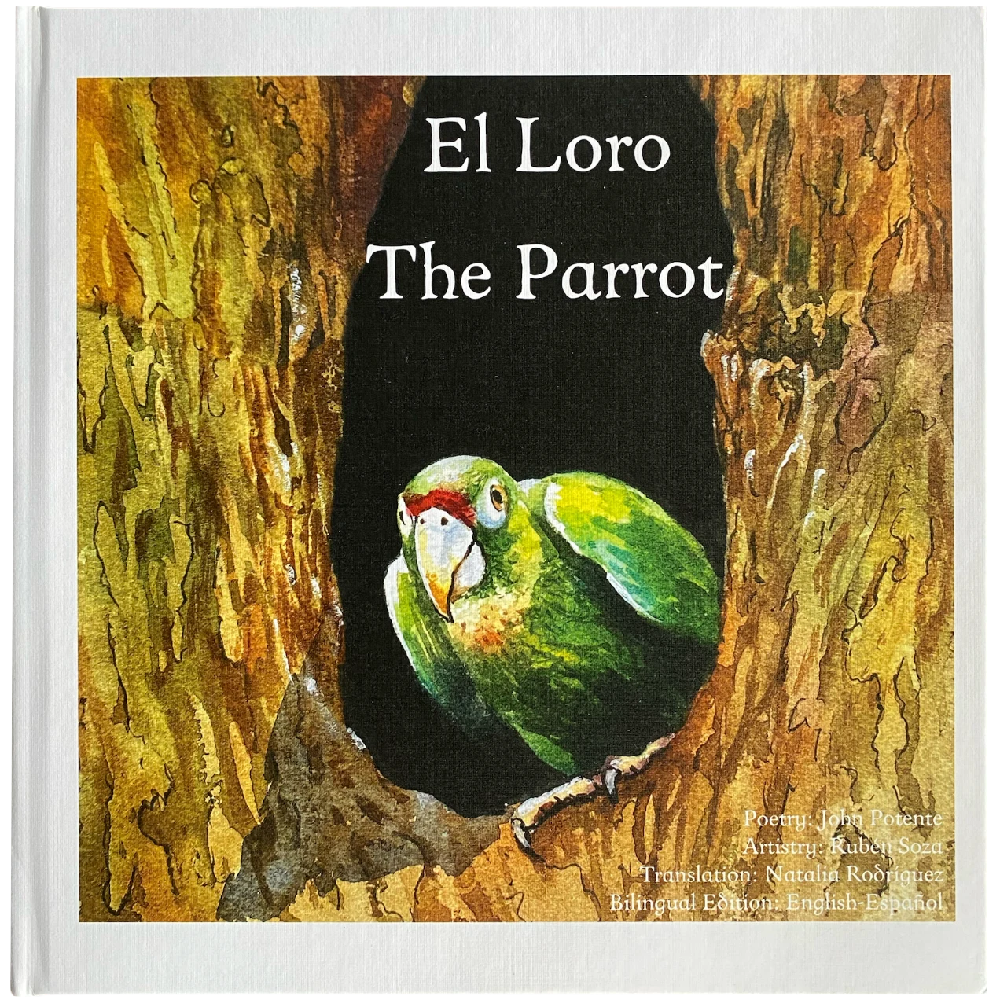

Cómpralo en Costa Rica
₡12.000
Envío gratis en la GAM y Nicoya.
Envíanos un mensaje para coordinar tu compra.
Pedir por WhatsApp ↗+506 8896 9777
juan.cr01 / Sonidos
Video musical
Una historia de amor sobre una piña y un coco en la playa Jacó, Costa Rica.
La conversación continúa en YouTube.
Comentarios en YouTube ↗02 / Palabras

Edición bilingüe · Español / Inglés
«El Loro» cuenta la historia de un loro cuya madre fue capturada en la naturaleza. Nació en una jaula y nunca supo qué se sentía al ser libre. Sin embargo, reconocía las formas, los colores y los llamados de los loros que volaban sobre él.
Una historia de separación y confinamiento de animales privados de sus vínculos sociales instintivos.
Cómpralo en Costa Rica
Envío gratis en la GAM y Nicoya.
Envíanos un mensaje para coordinar tu compra.
Pedir por WhatsApp ↗+506 8896 9777Cómpralo en Estados Unidos
Adquiere tu libro en la tienda en línea.
Comprar el libro ↗